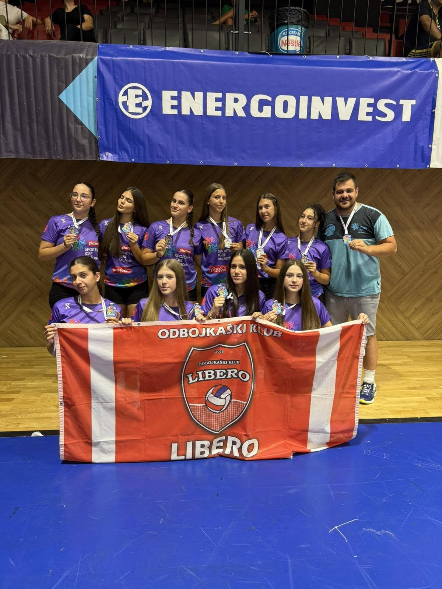
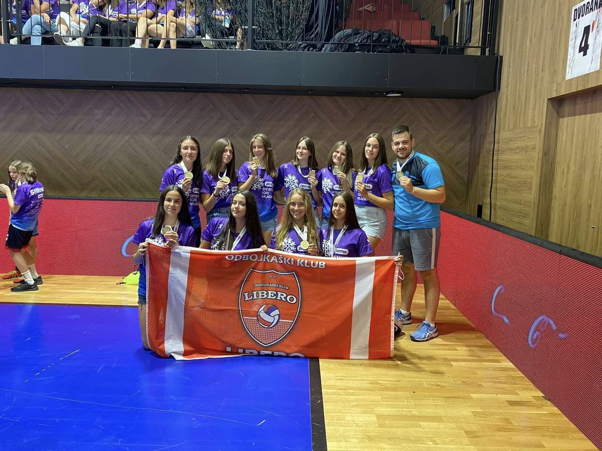
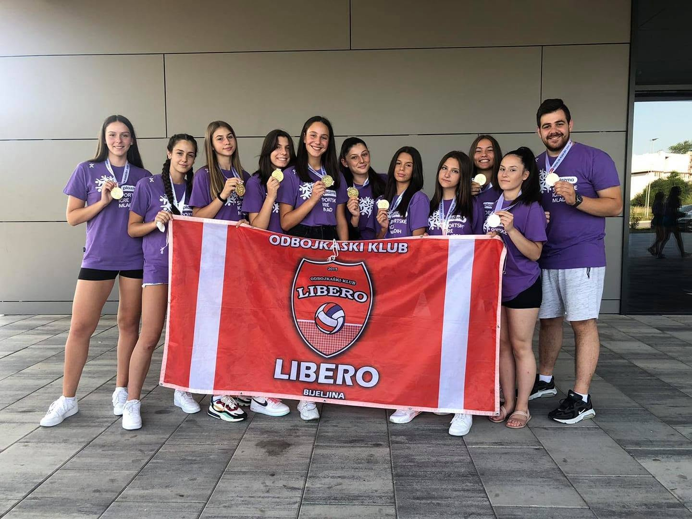

🥇 Šampionke Republike Srpske
Juniorska liga RSJuniorska ekipa ponavlja rezultat od prethodne godine i po drugi put zaredom osvaja zlato na Juniorskom turniru RS u Nevesinju.

🥉 Osvajačice bronzane medalje Igara mladih Bosne i Hercegovine
Igre mladihŽenska pionirska ekipa osvaja bronzanu medalju na turniru Igara mladih u Sarajevu i time finalizira osvajačku sezonu, jednu od najjačih u istoriji kluba.

🥇 Šampionke Republike Srpske
Juniorska liga RSŽenska juniorska ekipa prvi put u svojoj konkurenciji osvaja zlato na Juniorskom takmičenju RS u Gacku.

🥉 Osvajačice bronzane medalje Bosne i Hercegovine
Kadetska liga BiHŽenska kadetska ekipa prvi put u svojoj konkurenciji dolazi do državne završnice BiH i osvaja treće mjesto.

🥈 Vicešampionke Republike Srpske
Kadetska liga RSŽenska kadetska ekipa postaje vicešampion na Kadetskom takmičenju RS u Brčkom nakon dvije pobjede i jednog poraza.

🥈 Vicešampionke Republike Srpske
Prva Liga RSŽenska seniorska ekipa dostigla finale Prve lige RS u kojem je osvojila drugo mjesto i time podigla standarde za buduće generacije ovog kluba.

🥉 Osvajačice bronzane medalje Republike Srpske
Kadetska liga RSŽenska kadetska ekipa osvaja bronzanu medalju na Kadetskom takmičenju RS u Ljubinju nakon pobjede nad ekipom OK "Kozara".

🥇 Šampionke Republike Srpske
Kadetska liga RSŽenska kadetska ekipa prvi put u svojoj konkurenciji osvaja zlato na Kadetskom prvenstvu RS u Bijeljini.

🥇 Šampionke igara mladih Bosne i Hercegovine
Igre mladihŽenska pionirska ekipa drugi put zaredom osvaja titulu Igara mladih u Sarajevu i ponovo se plasirale na Međunarodni turnir u Splitu.

🥇 Šampionke igara mladih Bosne i Hercegovine
Igre mladihŽenska pionirska ekipa zaokružuje fenomenalnu sezonu osvajanjem Igara mladih u Sarajevu i time sezonu završava sa tri zlatne medalje.

🥇 Državne šampionke Bosne i Hercegovine
Pionirska liga BiHŽenska pionirska ekipa ostvarila je istorijski rezultat osvojivši državno prvenstvo BiH nakon neizvijesne pobjede u finalu nad ekipom OK "Velež" Nevesinje.

🥇 Šampionke Republike Srpske
Pionirska liga RSŽenska pionirska ekipa postala je šampion Juniorskom takmičenja RS nakon pobjede u finalu u Nevesinju.

🥉 Osvajačice bronzane medalje Republike Srpske
Juniorska liga RSŽenska juniorska ekipa osvaja bronzanu medalju na Juniorskom takmičenju RS nakon pobjede nad ekipom OK "Gacko" na Palama.

🥇 Šampionke Republike Srpske
Seniorska Druga liga RSŽenska seniorska ekipa osvaja prvi velki trofej u istoriji kluba i osvaja Drugu ligu RS nakon pobjede nad ekipom OK "Borac", čime je dobila pravo na učešće u Prvoj ligi RS.

🥈 Vicešampioni Republike Srpske
Pionirska liga RSMuška pionirska ekipa osvaja srebrnu medalju na Pionirskom takmičenju RS nakon pobjede nad ekipama OK "Jahorina" i OK "Modriča".

🥉 Osvajači bronzane medalje Republike Srpske
Juniorska liga RSMuška juniorska ekipa osvaja bronzanu medalju na Juniorskom takmičenju RS u Modriči.

🥉 Osvajači bronzane medalje Republike Srpske
Pionirska liga RSMuška pionirska ekipa osvaja bronzanu medalju na Pionirskom takmičenju RS.

🥈 Vicešampioni Republike Srpske
Juniorska liga RSMuška juniorska ekipa osvaja srebrnu medalju na Juniorskom takmičenju RS što je ujedno i prva medalja u klupskoj istoriji.